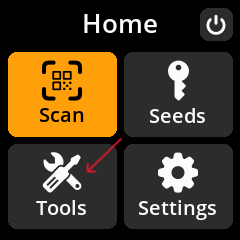
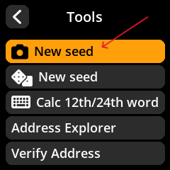
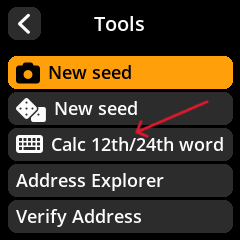
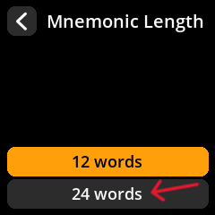
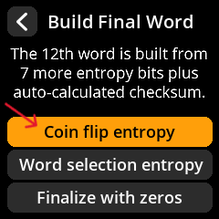
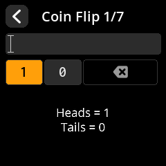
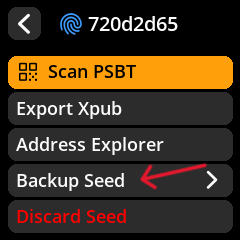
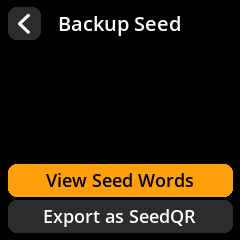

Make your own secret private-key in the form of a QR code and a seedphrase
To create a private-key we need entropy or to put it simply: randomness.
The Seedsigner gives you a few options here. You could have the device take a picture and use the
randomness in it to create a private key,
or you could use dice or a coin to create your very own entropy taken directly from the universe.
Picture Method
Pros
- Fast and user-friendly
- Uses camera sensor noise and pixel variation
- No need for manual input
Cons
- Entropy source is abstract
- Requires trust in randomness implementation
Dice/Coin Method
Pros
- Fully auditable entropy source
- Transparent and reassuring for paranoid users
- Immune to software bugs in randomness generation
Cons
- Slower and more error-prone (manual entry)
- Requires knowledge of bit conversion
For the picture key creation you start up the Seedsigner by plugging it into a powerbank. Then
navigate to "🔧 Tools" and choose "📷 New seed". Proceed from there and make sure to
note the Seedphrase and fingerprint down diligently. If you want to add a 25th word as a password,
you can.


You might choose to skip ahead to Stage 4.2: Backing up the
private key as a seedphrase or QR code
We recommend creating your own entropy in keeping with the Bitcoin principle of reducing trust in
third parties.
Stage 4.1.1: Creating your own entropy using a coin or dice
This will take some time. You will flip a coin, or roll dice 256 times.
Step 1:
Make sure there are no cameras or microphones around.
Step 2:
Get:
As for the paper you can also download and print this PDF
template we prepared and write your digits in the binary rows.
Step 3:
Learn the rules
1. For the coin: consider heads an output of 0 and
tails an output
of 1. You could also do it the other way around but you have to
decide which way and stick to it.
2. For the dice: consider the numbers 1,2,3 to have an output of 0
and 4,5,6 an output of 1.
3. Decide whether you write and read from right to left or vice versa.
4. You must maintain consistency with the ruleset you decided beforehand.
5. You must make 23 lines of 11 digits. The 24th line will only need 3 digits.
6. For each line, clump digits into groups of 4-4-3 (see image below) for easy reading and
calculating.
Keep
your vertical columns aligned as much as possible and leave space between each row for manual
calculations.
Step 4: Start the process
1. Flip the coin or roll the dice
2. Write down the result in your first row
3. Keep flipping and writing to finish your first row in groups of 4, 4 and 3 digits.
4. Make 23 rows and then write down another three digits for row 24.
There are 256 binary digits here — 23 complete sets of 11 binary digits
with the 24th row only needing three
binary digits.
This will make sense later. For now, understand that every 11 binary
digits will be translated to
a
mnemonic seed word and eventually result in a
mnemonic seedphrase.
A note on randomness:
As explained in the article DIY Bitcoin
Private Key Project by Arman The Parman from Bitcoin Magazine, a private key
generated
with all-zero entropy once matched an existing wallet, showing how dangerous bad randomness can
be.
"You can make these 256 bits of random data any way you want, as long as it’s actually random. If
it’s not random, someone might be able to reproduce the data. They would then be able to
recreate your private key and could take all of your bitcoin. For example, if you make 256 bits
of all zeroes (clearly not random), then someone will be able to guess your private key. Here’s
proof: I generated a private key from that terrible all-zeroes randomness and found someone’s
existing wallet. If it hadn’t already been emptied, I could have stolen the funds.
Here's proof: I generated a private key from that terrible all-zeroes randomness and
found
someone's existing wallet. If it hadn't already been emptied, I could have stolen the funds.
They clearly knew what they were doing because it was a small amount and they didn’t leave any
coins there for long. It might have been a demonstration, who knows. But other people have made
non-random private keys that were guessable and as a result lost their bitcoin. But don’t worry,
if you make a truly random private key, someone would have to exactly repeat your binary dice
rolls or coin flips and, thanks to exponential math, that’s not going to happen during the life
of the universe."
Quote from
Bitcoin Magazine, published April 2021: "DIY Bitcoin Private Key Project"
Stage 4.1.2: Converting our binary digit entropy to decimal
In binary, there are only two digits:
1s and 0s. Each 1 or
0 is called a bit, which is one
piece of information. This is the smallest unit of
information in computing.
In binary, a set of eleven bits could look like the first one from
our example above:
0110 1111 101
and can be converted to a decimal number by multiplying each bit with powers of two descending
from 2¹⁰, 2⁹,...,2⁰ and then adding the result up.
(2¹⁰ x 0) + (2⁹ x 1) + (2⁸ x 1) + (2⁷ x 0) + (2⁶ x 1) + (2⁵ x 1) + (2⁴ x 1) + (2³ x 1) + (2² x 1) +
(2¹
x
0)+ (2⁰ x 1) = 1833
Decimals are easier to handle than powers
of two.
So we will use decimals from here.
The table below shows which decimal can represent which power
of two.
We can now take our group of eleven binary digits and multiply them
by the decimals from our table above.
1024 x 0 + 512 x 1 + 256 x 1 + 128 x 0 + 64 x 1 + 32 x 1 + 16 x 1 + 8 x 1 + 4 x 1 + 2 x 0 + 1 x 1 =
893
Do this calculation for all of your 23 rows, do so carefully and then double check for errors by
recalculating a second time. You can either do this on a sheet of paper you design or download the two PDF files we made.
PDF 1 and PDF 2. Below you see part of the table in the PDF and each field explained.
Stage 4.1.3: Matching the decimals to the Bitcoin Wordlist
(BIP39)
Warning: Do not use a phone or even have a phone in the room. You can use this PDF
cheatsheet to make adding up the decimals faster.
A group of eleven bits (from the highest place value 2¹⁰ down to 2⁰) can represent
decimal numbers
from 0 up to 2047. Because of this
there is the +1 cell in the
table, before we get our word, as the wordlist starts from 1-2048 not from 0-2047 and therefore does
not have a word corresponding to the result 0.
It is recommended to view this on desktop for more visual clarity.
- powers of two as decimal
- rows with your groups of 11 digits in binary
- Direction of calculation
- adding +1 to the added up decimal to match the
wordlist below
- the result after adding up the decimals and then
adding +1 to match the wordlist
| # |
|
↓
x1024
|
↓
x512
|
↓
x256
|
↓
x128
|
↓
x64 |
↓
x32 |
↓
x16 |
↓
x8 |
↓
x4 |
↓
x2 |
↓
x1 |
+1 |
Result |
Word |
| 1. |
Binary |
↓ 0 |
↓ 1 |
↓ 1 |
↓ 0 |
↓ 1 |
↓ 1 |
↓ 1 |
↓ 1 |
↓ 1 |
↓ 0 |
↓ 1 |
|
|
|
|
Decimal |
0 → |
+ 512 → |
+ 256 → |
+ 0 → |
+ 64 → |
+ 32 → |
+ 16 → |
+ 8 → |
+ 4 → |
+ 0 → |
+ 1 → |
893 + 1 |
894 |
hurry |
| 2. |
Binary |
0 |
0 |
0 |
0 |
0 |
0 |
0 |
0 |
0 |
0 |
0 |
|
|
|
|
Decimal |
0 |
+ 0 |
+ 0 |
+ 0 |
+ 0 |
+ 0 |
+ 0 |
+ 0 |
+ 0 |
+ 0 |
+ 0 |
0 + 1 |
1 |
ability |
| 3. |
Binary |
1 |
1 |
1 |
0 |
0 |
0 |
1 |
0 |
1 |
0 |
0 |
|
|
|
|
Decimal |
1024 |
+ 512 |
+ 256 |
+ 0 |
+ 0 |
+ 0 |
+ 16 |
+ 0 |
+ 4 |
+ 0 |
+ 0 |
1812 + 1 |
1813 |
tip |
| Binary |
Decimal |
| 0 → |
x 1024 ↓ |
| 1 → |
x 512 ↓ |
| 1 → |
x 256 ↓ |
| 0 → |
x 128 ↓ |
| 1 → |
x 64 ↓ |
| 1 → |
x 32 ↓ |
| 1 → |
x 16 ↓ |
| 1 → |
x 8 ↓ |
| 1 → |
x 4 ↓ |
| 0 → |
x 2 ↓ |
| 1 → |
x 1 ↓ |
| = |
893 |
| +1 → |
894 ↓ |
| Word |
hurry |
You can always find the word list here on Github and multiple
other pages simply by searching the Bitcoin Wordlist.
Wordlist
- abandon
- ability
- able
- about
- above
- absent
- absorb
- abstract
- absurd
- abuse
- access
- accident
- account
- accuse
- achieve
- acid
- acoustic
- acquire
- across
- act
- action
- actor
- actress
- actual
- adapt
- add
- addict
- address
- adjust
- admit
- adult
- advance
- advice
- aerobic
- affair
- afford
- afraid
- again
- age
- agent
- agree
- ahead
- aim
- air
- airport
- aisle
- alarm
- album
- alcohol
- alert
- alien
- all
- alley
- allow
- almost
- alone
- alpha
- already
- also
- alter
- always
- amateur
- amazing
- among
- amount
- amused
- analyst
- anchor
- ancient
- anger
- angle
- angry
- animal
- ankle
- announce
- annual
- another
- answer
- antenna
- antique
- anxiety
- any
- apart
- apology
- appear
- apple
- approve
- april
- arch
- arctic
- area
- arena
- argue
- arm
- armed
- armor
- army
- around
- arrange
- arrest
- arrive
- arrow
- art
- artefact
- artist
- artwork
- ask
- aspect
- assault
- asset
- assist
- assume
- asthma
- athlete
- atom
- attack
- attend
- attitude
- attract
- auction
- audit
- august
- aunt
- author
- auto
- autumn
- average
- avocado
- avoid
- awake
- aware
- away
- awesome
- awful
- awkward
- axis
- baby
- bachelor
- bacon
- badge
- bag
- balance
- balcony
- ball
- bamboo
- banana
- banner
- bar
- barely
- bargain
- barrel
- base
- basic
- basket
- battle
- beach
- bean
- beauty
- because
- become
- beef
- before
- begin
- behave
- behind
- believe
- below
- belt
- bench
- benefit
- best
- betray
- better
- between
- beyond
- bicycle
- bid
- bike
- bind
- biology
- bird
- birth
- bitter
- black
- blade
- blame
- blanket
- blast
- bleak
- bless
- blind
- blood
- blossom
- blouse
- blue
- blur
- blush
- board
- boat
- body
- boil
- bomb
- bone
- bonus
- book
- boost
- border
- boring
- borrow
- boss
- bottom
- bounce
- box
- boy
- bracket
- brain
- brand
- brass
- brave
- bread
- breeze
- brick
- bridge
- brief
- bright
- bring
- brisk
- broccoli
- broken
- bronze
- broom
- brother
- brown
- brush
- bubble
- buddy
- budget
- buffalo
- build
- bulb
- bulk
- bullet
- bundle
- bunker
- burden
- burger
- burst
- bus
- business
- busy
- butter
- buyer
- buzz
- cabbage
- cabin
- cable
- cactus
- cage
- cake
- call
- calm
- camera
- camp
- can
- canal
- cancel
- candy
- cannon
- canoe
- canvas
- canyon
- capable
- capital
- captain
- car
- carbon
- card
- cargo
- carpet
- carry
- cart
- case
- cash
- casino
- castle
- casual
- cat
- catalog
- catch
- category
- cattle
- caught
- cause
- caution
- cave
- ceiling
- celery
- cement
- census
- century
- cereal
- certain
- chair
- chalk
- champion
- change
- chaos
- chapter
- charge
- chase
- chat
- cheap
- check
- cheese
- chef
- cherry
- chest
- chicken
- chief
- child
- chimney
- choice
- choose
- chronic
- chuckle
- chunk
- churn
- cigar
- cinnamon
- circle
- citizen
- city
- civil
- claim
- clap
- clarify
- claw
- clay
- clean
- clerk
- clever
- click
- client
- cliff
- climb
- clinic
- clip
- clock
- clog
- close
- cloth
- cloud
- clown
- club
- clump
- cluster
- clutch
- coach
- coast
- coconut
- code
- coffee
- coil
- coin
- collect
- color
- column
- combine
- come
- comfort
- comic
- common
- company
- concert
- conduct
- confirm
- congress
- connect
- consider
- control
- convince
- cook
- cool
- copper
- copy
- coral
- core
- corn
- correct
- cost
- cotton
- couch
- country
- couple
- course
- cousin
- cover
- coyote
- crack
- cradle
- craft
- cram
- crane
- crash
- crater
- crawl
- crazy
- cream
- credit
- creek
- crew
- cricket
- crime
- crisp
- critic
- crop
- cross
- crouch
- crowd
- crucial
- cruel
- cruise
- crumble
- crunch
- crush
- cry
- crystal
- cube
- culture
- cup
- cupboard
- curious
- current
- curtain
- curve
- cushion
- custom
- cute
- cycle
- dad
- damage
- damp
- dance
- danger
- daring
- dash
- daughter
- dawn
- day
- deal
- debate
- debris
- decade
- december
- decide
- decline
- decorate
- decrease
- deer
- defense
- define
- defy
- degree
- delay
- deliver
- demand
- demise
- denial
- dentist
- deny
- depart
- depend
- deposit
- depth
- deputy
- derive
- describe
- desert
- design
- desk
- despair
- destroy
- detail
- detect
- develop
- device
- devote
- diagram
- dial
- diamond
- diary
- dice
- diesel
- diet
- differ
- digital
- dignity
- dilemma
- dinner
- dinosaur
- direct
- dirt
- disagree
- discover
- disease
- dish
- dismiss
- disorder
- display
- distance
- divert
- divide
- divorce
- dizzy
- doctor
- document
- dog
- doll
- dolphin
- domain
- donate
- donkey
- donor
- door
- dose
- double
- dove
- draft
- dragon
- drama
- drastic
- draw
- dream
- dress
- drift
- drill
- drink
- drip
- drive
- drop
- drum
- dry
- duck
- dumb
- dune
- during
- dust
- dutch
- duty
- dwarf
- dynamic
- eager
- eagle
- early
- earn
- earth
- easily
- east
- easy
- echo
- ecology
- economy
- edge
- edit
- educate
- effort
- egg
- eight
- either
- elbow
- elder
- electric
- elegant
- element
- elephant
- elevator
- elite
- else
- embark
- embody
- embrace
- emerge
- emotion
- employ
- empower
- empty
- enable
- enact
- end
- endless
- endorse
- enemy
- energy
- enforce
- engage
- engine
- enhance
- enjoy
- enlist
- enough
- enrich
- enroll
- ensure
- enter
- entire
- entry
- envelope
- episode
- equal
- equip
- era
- erase
- erode
- erosion
- error
- erupt
- escape
- essay
- essence
- estate
- eternal
- ethics
- evidence
- evil
- evoke
- evolve
- exact
- example
- excess
- exchange
- excite
- exclude
- excuse
- execute
- exercise
- exhaust
- exhibit
- exile
- exist
- exit
- exotic
- expand
- expect
- expire
- explain
- expose
- express
- extend
- extra
- eye
- eyebrow
- fabric
- face
- faculty
- fade
- faint
- faith
- fall
- false
- fame
- family
- famous
- fan
- fancy
- fantasy
- farm
- fashion
- fat
- fatal
- father
- fatigue
- fault
- favorite
- feature
- february
- federal
- fee
- feed
- feel
- female
- fence
- festival
- fetch
- fever
- few
- fiber
- fiction
- field
- figure
- file
- film
- filter
- final
- find
- fine
- finger
- finish
- fire
- firm
- first
- fiscal
- fish
- fit
- fitness
- fix
- flag
- flame
- flash
- flat
- flavor
- flee
- flight
- flip
- float
- flock
- floor
- flower
- fluid
- flush
- fly
- foam
- focus
- fog
- foil
- fold
- follow
- food
- foot
- force
- forest
- forget
- fork
- fortune
- forum
- forward
- fossil
- foster
- found
- fox
- fragile
- frame
- frequent
- fresh
- friend
- fringe
- frog
- front
- frost
- frown
- frozen
- fruit
- fuel
- fun
- funny
- furnace
- fury
- future
- gadget
- gain
- galaxy
- gallery
- game
- gap
- garage
- garbage
- garden
- garlic
- garment
- gas
- gasp
- gate
- gather
- gauge
- gaze
- general
- genius
- genre
- gentle
- genuine
- gesture
- ghost
- giant
- gift
- giggle
- ginger
- giraffe
- girl
- give
- glad
- glance
- glare
- glass
- glide
- glimpse
- globe
- gloom
- glory
- glove
- glow
- glue
- goat
- goddess
- gold
- good
- goose
- gorilla
- gospel
- gossip
- govern
- gown
- grab
- grace
- grain
- grant
- grape
- grass
- gravity
- great
- green
- grid
- grief
- grit
- grocery
- group
- grow
- grunt
- guard
- guess
- guide
- guilt
- guitar
- gun
- gym
- habit
- hair
- half
- hammer
- hamster
- hand
- happy
- harbor
- hard
- harsh
- harvest
- hat
- have
- hawk
- hazard
- head
- health
- heart
- heavy
- hedgehog
- height
- hello
- helmet
- help
- hen
- hero
- hidden
- high
- hill
- hint
- hip
- hire
- history
- hobby
- hockey
- hold
- hole
- holiday
- hollow
- home
- honey
- hood
- hope
- horn
- horror
- horse
- hospital
- host
- hotel
- hour
- hover
- hub
- huge
- human
- humble
- humor
- hundred
- hungry
- hunt
- hurdle
- hurry
- hurt
- husband
- hybrid
- ice
- icon
- idea
- identify
- idle
- ignore
- ill
- illegal
- illness
- image
- imitate
- immense
- immune
- impact
- impose
- improve
- impulse
- inch
- include
- income
- increase
- index
- indicate
- indoor
- industry
- infant
- inflict
- inform
- inhale
- inherit
- initial
- inject
- injury
- inmate
- inner
- innocent
- input
- inquiry
- insane
- insect
- inside
- inspire
- install
- intact
- interest
- into
- invest
- invite
- involve
- iron
- island
- isolate
- issue
- item
- ivory
- jacket
- jaguar
- jar
- jazz
- jealous
- jeans
- jelly
- jewel
- job
- join
- joke
- journey
- joy
- judge
- juice
- jump
- jungle
- junior
- junk
- just
- kangaroo
- keen
- keep
- ketchup
- key
- kick
- kid
- kidney
- kind
- kingdom
- kiss
- kit
- kitchen
- kite
- kitten
- kiwi
- knee
- knife
- knock
- know
- lab
- label
- labor
- ladder
- lady
- lake
- lamp
- language
- laptop
- large
- later
- latin
- laugh
- laundry
- lava
- law
- lawn
- lawsuit
- layer
- lazy
- leader
- leaf
- learn
- leave
- lecture
- left
- leg
- legal
- legend
- leisure
- lemon
- lend
- length
- lens
- leopard
- lesson
- letter
- level
- liar
- liberty
- library
- license
- life
- lift
- light
- like
- limb
- limit
- link
- lion
- liquid
- list
- little
- live
- lizard
- load
- loan
- lobster
- local
- lock
- logic
- lonely
- long
- loop
- lottery
- loud
- lounge
- love
- loyal
- lucky
- luggage
- lumber
- lunar
- lunch
- luxury
- lyrics
- machine
- mad
- magic
- magnet
- maid
- mail
- main
- major
- make
- mammal
- man
- manage
- mandate
- mango
- mansion
- manual
- maple
- marble
- march
- margin
- marine
- market
- marriage
- mask
- mass
- master
- match
- material
- math
- matrix
- matter
- maximum
- maze
- meadow
- mean
- measure
- meat
- mechanic
- medal
- media
- melody
- melt
- member
- memory
- mention
- menu
- mercy
- merge
- merit
- merry
- mesh
- message
- metal
- method
- middle
- midnight
- milk
- million
- mimic
- mind
- minimum
- minor
- minute
- miracle
- mirror
- misery
- miss
- mistake
- mix
- mixed
- mixture
- mobile
- model
- modify
- mom
- moment
- monitor
- monkey
- monster
- month
- moon
- moral
- more
- morning
- mosquito
- mother
- motion
- motor
- mountain
- mouse
- move
- movie
- much
- muffin
- mule
- multiply
- muscle
- museum
- mushroom
- music
- must
- mutual
- myself
- mystery
- myth
- naive
- name
- napkin
- narrow
- nasty
- nation
- nature
- near
- neck
- need
- negative
- neglect
- neither
- nephew
- nerve
- nest
- net
- network
- neutral
- never
- news
- next
- nice
- night
- noble
- noise
- nominee
- noodle
- normal
- north
- nose
- notable
- note
- nothing
- notice
- novel
- now
- nuclear
- number
- nurse
- nut
- oak
- obey
- object
- oblige
- obscure
- observe
- obtain
- obvious
- occur
- ocean
- october
- odor
- off
- offer
- office
- often
- oil
- okay
- old
- olive
- olympic
- omit
- once
- one
- onion
- online
- only
- open
- opera
- opinion
- oppose
- option
- orange
- orbit
- orchard
- order
- ordinary
- organ
- orient
- original
- orphan
- ostrich
- other
- outdoor
- outer
- output
- outside
- oval
- oven
- over
- own
- owner
- oxygen
- oyster
- ozone
- pact
- paddle
- page
- pair
- palace
- palm
- panda
- panel
- panic
- panther
- paper
- parade
- parent
- park
- parrot
- party
- pass
- patch
- path
- patient
- patrol
- pattern
- pause
- pave
- payment
- peace
- peanut
- pear
- peasant
- pelican
- pen
- penalty
- pencil
- people
- pepper
- perfect
- permit
- person
- pet
- phone
- photo
- phrase
- physical
- piano
- picnic
- picture
- piece
- pig
- pigeon
- pill
- pilot
- pink
- pioneer
- pipe
- pistol
- pitch
- pizza
- place
- planet
- plastic
- plate
- play
- please
- pledge
- pluck
- plug
- plunge
- poem
- poet
- point
- polar
- pole
- police
- pond
- pony
- pool
- popular
- portion
- position
- possible
- post
- potato
- pottery
- poverty
- powder
- power
- practice
- praise
- predict
- prefer
- prepare
- present
- pretty
- prevent
- price
- pride
- primary
- print
- priority
- prison
- private
- prize
- problem
- process
- produce
- profit
- program
- project
- promote
- proof
- property
- prosper
- protect
- proud
- provide
- public
- pudding
- pull
- pulp
- pulse
- pumpkin
- punch
- pupil
- puppy
- purchase
- purity
- purpose
- purse
- push
- put
- puzzle
- pyramid
- quality
- quantum
- quarter
- question
- quick
- quit
- quiz
- quote
- rabbit
- raccoon
- race
- rack
- radar
- radio
- rail
- rain
- raise
- rally
- ramp
- ranch
- random
- range
- rapid
- rare
- rate
- rather
- raven
- raw
- razor
- ready
- real
- reason
- rebel
- rebuild
- recall
- receive
- recipe
- record
- recycle
- reduce
- reflect
- reform
- refuse
- region
- regret
- regular
- reject
- relax
- release
- relief
- rely
- remain
- remember
- remind
- remove
- render
- renew
- rent
- reopen
- repair
- repeat
- replace
- report
- require
- rescue
- resemble
- resist
- resource
- response
- result
- retire
- retreat
- return
- reunion
- reveal
- review
- reward
- rhythm
- rib
- ribbon
- rice
- rich
- ride
- ridge
- rifle
- right
- rigid
- ring
- riot
- ripple
- risk
- ritual
- rival
- river
- road
- roast
- robot
- robust
- rocket
- romance
- roof
- rookie
- room
- rose
- rotate
- rough
- round
- route
- royal
- rubber
- rude
- rug
- rule
- run
- runway
- rural
- sad
- saddle
- sadness
- safe
- sail
- salad
- salmon
- salon
- salt
- salute
- same
- sample
- sand
- satisfy
- satoshi
- sauce
- sausage
- save
- say
- scale
- scan
- scare
- scatter
- scene
- scheme
- school
- science
- scissors
- scorpion
- scout
- scrap
- screen
- script
- scrub
- sea
- search
- season
- seat
- second
- secret
- section
- security
- seed
- seek
- segment
- select
- sell
- seminar
- senior
- sense
- sentence
- series
- service
- session
- settle
- setup
- seven
- shadow
- shaft
- shallow
- share
- shed
- shell
- sheriff
- shield
- shift
- shine
- ship
- shiver
- shock
- shoe
- shoot
- shop
- short
- shoulder
- shove
- shrimp
- shrug
- shuffle
- shy
- sibling
- sick
- side
- siege
- sight
- sign
- silent
- silk
- silly
- silver
- similar
- simple
- since
- sing
- siren
- sister
- situate
- six
- size
- skate
- sketch
- ski
- skill
- skin
- skirt
- skull
- slab
- slam
- sleep
- slender
- slice
- slide
- slight
- slim
- slogan
- slot
- slow
- slush
- small
- smart
- smile
- smoke
- smooth
- snack
- snake
- snap
- sniff
- snow
- soap
- soccer
- social
- sock
- soda
- soft
- solar
- soldier
- solid
- solution
- solve
- someone
- song
- soon
- sorry
- sort
- soul
- sound
- soup
- source
- south
- space
- spare
- spatial
- spawn
- speak
- special
- speed
- spell
- spend
- sphere
- spice
- spider
- spike
- spin
- spirit
- split
- spoil
- sponsor
- spoon
- sport
- spot
- spray
- spread
- spring
- spy
- square
- squeeze
- squirrel
- stable
- stadium
- staff
- stage
- stairs
- stamp
- stand
- start
- state
- stay
- steak
- steel
- stem
- step
- stereo
- stick
- still
- sting
- stock
- stomach
- stone
- stool
- story
- stove
- strategy
- street
- strike
- strong
- struggle
- student
- stuff
- stumble
- style
- subject
- submit
- subway
- success
- such
- sudden
- suffer
- sugar
- suggest
- suit
- summer
- sun
- sunny
- sunset
- super
- supply
- supreme
- sure
- surface
- surge
- surprise
- surround
- survey
- suspect
- sustain
- swallow
- swamp
- swap
- swarm
- swear
- sweet
- swift
- swim
- swing
- switch
- sword
- symbol
- symptom
- syrup
- system
- table
- tackle
- tag
- tail
- talent
- talk
- tank
- tape
- target
- task
- taste
- tattoo
- taxi
- teach
- team
- tell
- ten
- tenant
- tennis
- tent
- term
- test
- text
- thank
- that
- theme
- then
- theory
- there
- they
- thing
- this
- thought
- three
- thrive
- throw
- thumb
- thunder
- ticket
- tide
- tiger
- tilt
- timber
- time
- tiny
- tip
- tired
- tissue
- title
- toast
- tobacco
- today
- toddler
- toe
- together
- toilet
- token
- tomato
- tomorrow
- tone
- tongue
- tonight
- tool
- tooth
- top
- topic
- topple
- torch
- tornado
- tortoise
- toss
- total
- tourist
- toward
- tower
- town
- toy
- track
- trade
- traffic
- tragic
- train
- transfer
- trap
- trash
- travel
- tray
- treat
- tree
- trend
- trial
- tribe
- trick
- trigger
- trim
- trip
- trophy
- trouble
- truck
- true
- truly
- trumpet
- trust
- truth
- try
- tube
- tuition
- tumble
- tuna
- tunnel
- turkey
- turn
- turtle
- twelve
- twenty
- twice
- twin
- twist
- two
- type
- typical
- ugly
- umbrella
- unable
- unaware
- uncle
- uncover
- under
- undo
- unfair
- unfold
- unhappy
- uniform
- unique
- unit
- universe
- unknown
- unlock
- until
- unusual
- unveil
- update
- upgrade
- uphold
- upon
- upper
- upset
- urban
- urge
- usage
- use
- used
- useful
- useless
- usual
- utility
- vacant
- vacuum
- vague
- valid
- valley
- valve
- van
- vanish
- vapor
- various
- vast
- vault
- vehicle
- velvet
- vendor
- venture
- venue
- verb
- verify
- version
- very
- vessel
- veteran
- viable
- vibrant
- vicious
- victory
- video
- view
- village
- vintage
- violin
- virtual
- virus
- visa
- visit
- visual
- vital
- vivid
- vocal
- voice
- void
- volcano
- volume
- vote
- voyage
- wage
- wagon
- wait
- walk
- wall
- walnut
- want
- warfare
- warm
- warrior
- wash
- wasp
- waste
- water
- wave
- way
- wealth
- weapon
- wear
- weasel
- weather
- web
- wedding
- weekend
- weird
- welcome
- west
- wet
- whale
- what
- wheat
- wheel
- when
- where
- whip
- whisper
- wide
- width
- wife
- wild
- will
- win
- window
- wine
- wing
- wink
- winner
- winter
- wire
- wisdom
- wise
- wish
- witness
- wolf
- woman
- wonder
- wood
- wool
- word
- work
- world
- worry
- worth
- wrap
- wreck
- wrestle
- wrist
- write
- wrong
- yard
- year
- yellow
- you
- young
- youth
- zebra
- zero
- zone
- zoo
Stage 4.1.4: Creating the checksum for row 24 using
Seedsigner
After calculating the words for our first 23 rows we now need eight more bits to have enough bits for
the 24. row and finish our seed phrase. The last eight bits are
called the checksum. We will create this checksum using the
Seedsigner we assembled.
For this start up the seedsigner and go to "Tools", then choose "Calc 12th/24th word", then
choose
"24
words"
(or 12, if you made a shorter Seedphrase) and type in the 23 words you have.



Once you have input your 23 words, the Seedsigner will ask you how you want to create the last
word.
You
will
choose "Coin flip entropy" and input the last 3 digits from your
entropy (1s and 0s of row 24).


In the next screen the Seedsigner will show your input again, so you can confirm you didn't make
a
mistake.
Now you will see your checksum as well as your final word. In the image there are seven digits, for us it will be three.
In the next screen you will see your 24th word as well as a fingerprint. Write them both down on your
paper. Double check, so it is definitely correct.
In the next screen, the fingerprint is shown again. You should confirm that you wrote it down
without
any
errors.
Now you can either click "Done" to finish the process or add a BIP-39 Passphrase which
will
add
more
complexity and security to your setup. You can treat it as the 25. word. Keep in mind that it also
poses another threat for human
error on
your part.
Adding a passphrase in your Seedsigner after having input the 24 words of the mnemonic phrase will results in the creation of a completely new wallet. This means the 24 words are NOT the same wallet as the 24 words + the passphrase. All addresses will be different. Keep this in mind during your setup and when sending BTC.
Stage 4.2: Backing up the private key as a seedphrase or QR
code
With your private key loaded in the Seedsigner you can now choose to back up your seed by
clicking
"Backup
Seed" and viewing the Seed Words or Exporting them as a SeedQR (QR Code). This way it can more
easily
be
scanned by
Seedsigner later on.
This is useful but not recommended for your deepest cold storage and
more
suitable for a wallet which you want to send money away from regularly.
You can click on "View Seed
Words" to confirm once more that you wrote the words down correctly.


Find the templates at https://github.com/SeedSigner#seedqr-printable-templates, choose the
size
you prefer. Make sure it matches an option on the Seedsigner and then print it.
To test the QR code, restart the Seedsigner and scan the QR code to see whether the private-key
words
and the fingerprint match what you wrote down before.
If they match you successfully created your
private-key QR code for quick access via Seedsigner.
Remember the Seedsigner is a stateless device. This means whenever you want
to
sign a transaction you will have to input your private key again. This can be cumbersome when
using
24
words.
Choose your backup strategy wisely and balance between accessibility and safety, considering how
often
you will need to do transaction from this wallet.
Want a full backup architecture? See Advanced: Seed StoragePremium.


.png)